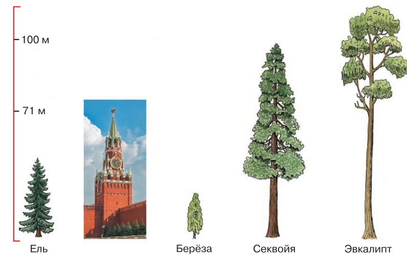
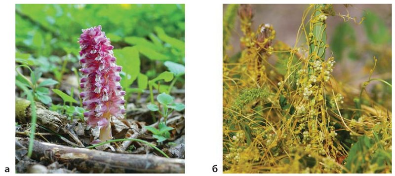
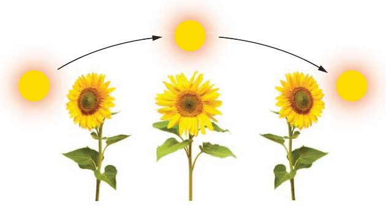
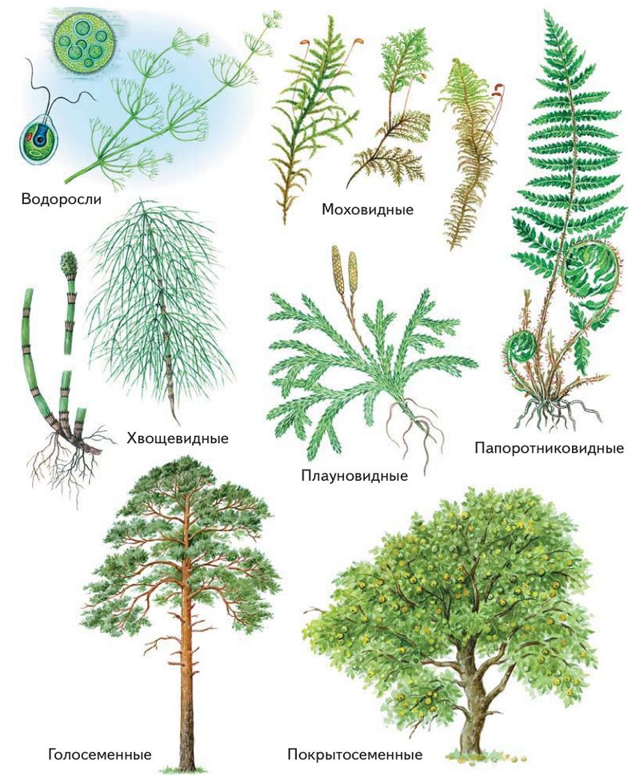

Общие признаки, разнообразие, распространение, значение растений
Амина, это параграф о том, чем растения отличаются от других живых существ, какие они бывают, где растут и зачем нужны.
Представь, что ты собираешь огромную коллекцию. В ней зелёный налёт на стенке аквариума, травинка во дворе, кактус на подоконнике и дерево выше тридцатиэтажного дома. Всё это растения. Такие разные — что же у них общего?
Оказывается, немало. Почти все растения зелёные и сами делают себе пищу из воды, воздуха и солнечного света. Они растут всю жизнь и умеют поворачиваться к свету.
Учёные делят это огромное царство на группы: низшие и высшие растения. А ещё растения дают всем живым существам кислород и пищу.
Название параграфа длинное, но в нём всего четыре части:
У каждого шага написано, на какой странице учебника искать. Внизу шага есть «Подробнее, как в учебнике»: там всё, что есть на этих страницах, ничего не пропущено. Сначала учи по коротким шагам, а перед уроком открой «подробнее».
Надпись вверху шага подскажет, откуда он: синяя — из учебника, золотая — задание учебника, оранжевая — сверх учебника (пересказ, словарик, игры, самопроверка). В «Содержании» шаги так же разбиты на группы.
Подробнее, как в учебнике · с. 10
- Параграф открывает главу 1 «Растение — живой организм» (так написано вверху страниц 11 и 13).
- Название параграфа: «Общие признаки, разнообразие, распространение, значение растений».
- В начале параграфа рамка «Вспомните» с двумя вопросами. Они на следующем шаге.
- В тексте три части с выделенными заголовками: «Многообразие растений», «Характерные признаки растений», «Значение растений в природе». К тексту четыре рисунка: рис. 4–7.
- В конце параграфа (с. 13) рамки «Запомните» (9 слов), «Проверьте себя» (4 вопроса) и «Подумайте!». Слова есть в словарике, вопросы — на шагах «Вопросы учебника» и «Подумай».
Вспомни, что ты уже знаешь
Параграф начинается с рамки «Вспомните». Это вопросы о том, что ты проходила в 5 классе. Попробуй сначала ответить сама, а подсказки помогут вспомнить.
По каким признакам растения отличаются от других организмов?
Подсказка: какого цвета почти все растения? Откуда растение берёт пищу — ищет её, как животное, или делает само? Может ли дерево уйти с места? Проверить себя можно на шагах 5–7.
Шаги 5–7 · Признаки растенийКак человек использует растения?
Подсказка: загляни на кухню, в шкаф с одеждой и в аптечку. Из чего хлеб, хлопковая футболка, бумага в тетради, деревянный стул? А ещё растения сажают на улицах городов — об этом шаг 11.
Шаг 11 · Растения и чистый воздухСколько на свете растений?
Все растения Земли учёные объединяют в царство Растения. Царство — самая большая группа живых организмов, у которых много общего. Ты знаешь и другие царства, например царство Животные.
В царстве Растения больше 350 тысяч видов. Вид — это растения, очень похожие друг на друга по строению. Например, все ромашки аптечные — один вид.
И какие же они разные! Самые маленькие — одноклеточные водоросли: их можно разглядеть только в микроскоп. А самые большие — деревья, которые поднимаются над землёй больше чем на 100 метров.

Слева шкала высоты с отметками 71 м и 100 м. Для сравнения рядом с деревьями нарисована Спасская башня Московского Кремля: она как раз около 71 метра. Ель и берёза гораздо ниже башни, а секвойя и эвкалипт — выше.
А как это — растение из одной клетки?
Клетка — крошечный «кирпичик» живого, ты знаешь о ней из 5 класса. В дереве миллиарды клеток, а у некоторых водорослей всего одна. И эта одна клетка сама питается, растёт и делится.
Подробнее, как в учебнике · с. 10
- «Многообразие растений». Царство Растения объединяет более 350 тысяч видов. Растения бывают самых разных форм — от одноклеточных микроскопических водорослей до огромных деревьев, которые возвышаются над землёй больше чем на 100 м (рис. 4).
- Рис. 4 «Размеры растений»: ель, берёза, секвойя и эвкалипт, для сравнения — Спасская башня Кремля. Слева шкала высоты с отметками 71 м и 100 м.
Где растут и сколько живут?
Растения живут почти повсюду — везде, куда проникает солнечный свет. И на суше, и в воде: в морях, океанах, реках и озёрах.
Больше всего разных растений в тропических, субтропических и умеренных зонах Земли. Но даже в холодной тундре и в арктических пустынях летом можно увидеть удивительно много видов растений.
А что это за зоны?
Тропики — самая жаркая часть Земли, там не бывает зимы. Например, джунгли Африки и Южной Америки.
Субтропики — тоже тепло, но зима мягкая и прохладная. Например, побережье Чёрного моря у Сочи.
Умеренная зона — есть и тёплое лето, и холодная зима. В ней лежит большая часть России.
Тундра и арктические пустыни — холодный Крайний Север, где лето короткое и прохладное.
И живут растения очень по-разному. Секвойя может прожить 4000 лет и больше! Она ещё и одно из самых высоких деревьев планеты: отдельные секвойи вырастают до 115 метров.
Бывают дубы старше 1000 лет. А есть растения, которые живут всего несколько месяцев, недель и даже дней.
Секвойя, которой 4000 лет, проросла, когда Древнего Рима ещё не было: Рим появится только через 1200 лет. Ты читала о нём на уроках истории в 5 классе.
Растения живут и в морской воде. В Каспийском море, на берегу которого стоит Каспийск, тоже растут водоросли и другие водные растения.
Подробнее, как в учебнике · с. 10
- Растения занимают всевозможные места обитания: они встречаются везде, куда проникает солнечный свет. Живут на суше и в водах морей, океанов, рек и озёр.
- Особенно велико многообразие растений в тропических, субтропических и умеренных зонах Земли. Но и в холодных зонах — в тундре и арктических пустынях — летом можно поразиться многообразию видов растений.
- Продолжительность жизни у растений разная. Возраст секвой может достигать 4000 лет и больше. Секвойя — одно из самых высоких деревьев на планете: отдельные деревья достигают 115 метров. Есть дубы старше 1000 лет, но есть растения, которые живут всего несколько месяцев, недель и даже дней.
Почему растения зелёные?
Первый признак растений виден сразу: почти все они зелёные. Но бывают и красные, бурые, жёлтые и других цветов.
Цвет растению дают особые красители в его клетках — пигменты. Слово пришло из латыни: «пигментум» значит «краска». Например, красные осенние листья клёна окрашены пигментами.
Самый распространённый пигмент растений — зелёный хлорофилл. Он улавливает солнечные лучи и помогает растению усвоить их энергию.
А без этого невозможен фотосинтез. Слово греческое: «фотос» — свет, «синтезис» — соединение. Фотосинтез — это когда растение из воды и углекислого газа с помощью энергии света делает органические вещества, то есть себе пищу.
Представь кухню, где плита работает от солнечной батареи. Продукты — вода и углекислый газ. Плита — хлорофилл. Электричество — солнечный свет. А готовое блюдо — органические вещества, пища растения.
А что такое органические и неорганические вещества?
Неорганические — вещества неживой природы, например вода и углекислый газ, который мы выдыхаем. Органические — вещества, из которых строят себя живые организмы, например сахар и крахмал. Крахмал есть в картошке и в хлебе, и сделали его растения.
Подробнее, как в учебнике · с. 10–11
- «Характерные признаки растений». Растения в основном зелёные, но могут быть красными, бурыми, жёлтыми и других цветов.
- Окраска растений зависит от того, какие особые красители есть в их клетках. Эти красители — пигменты (от лат. «пигментум» — краска).
- Самый распространённый у растений пигмент — зелёный хлорофилл. Он играет чрезвычайно важную роль: улавливает солнечные лучи и обеспечивает усвоение их энергии.
- Это необходимое условие фотосинтеза (от греч. «фотос» — свет и «синтезис» — соединение). Фотосинтез — процесс образования органических соединений из неорганических (воды и углекислого газа) за счёт энергии света.
Главный признак и исключения
Способность к фотосинтезу — главная особенность царства Растения. Ни кошка, ни человек так не умеют: нам нужна готовая пища, а растение делает её само.
Но есть исключения. Растения-паразиты фотосинтезом не занимаются. Паразит — тот, кто живёт за чужой счёт. Например, у заразихи и Петрова креста в клетках нет хлорофилла.
Как же они живут? Прикрепляются к другому растению и забирают у него готовые органические вещества, то есть готовую пищу.

Заметила? Петров крест розовый, а повилика похожа на жёлтые нитки, которые оплели чужие стебли. Зелёного цвета у них нет. Повилика — тоже растение-паразит.
Подробнее, как в учебнике · с. 11
- Способность к фотосинтезу — главная характерная особенность представителей царства Растения.
- Но некоторые растения к фотосинтезу не способны. Например, растения-паразиты заразиха и Петров крест не содержат в клетках хлорофилла. Они питаются готовыми органическими веществами, которые получают из растений, на которых паразитируют (рис. 5).
- Рис. 5 «Растения-паразиты: Петров крест (а), повилика (б)». Две фотографии.
Растут всю жизнь и умеют двигаться
Ещё одна особенность: растения растут всю жизнь. У животных (за немногими исключениями) рост ограничен: котёнок вырастает во взрослую кошку и дальше не растёт. А дерево год за годом становится выше и толще.
Активно передвигаться растения не могут: дерево не перейдёт на другое место, как собака. Но движения у них есть! Например, растение поворачивается и растёт в сторону света.

Утром солнце слева, днём наверху, вечером справа — стрелки показывают его путь. А подсолнечник поворачивает цветок вслед за солнцем.
Посмотри на комнатный цветок на подоконнике: его листья повёрнуты к окну. Разверни горшок — и через несколько дней листья снова повернутся к свету.
Подробнее, как в учебнике · с. 11
- Ещё одна особенность растений: в отличие от животных, у которых (за немногими исключениями) рост продолжается ограниченное время, растения растут в течение всей своей жизни.
- Растения не способны активно передвигаться, но движения у них есть. Например, они могут поворачиваться и расти в сторону источника света (рис. 6).
- Рис. 6 «Движения растения»: три подсолнечника поворачивают цветки вслед за солнцем.
Низшие и высшие растения
По строению все растения традиционно делят на две группы: низшие и высшие. Это не про рост! Маленький мох — высшее растение, а водоросль бывает длиной в несколько метров и всё равно низшая.
Низшие растения устроены просто. У них нет сложного строения из тканей: нет ни корней, ни стеблей, ни листьев. Тело самых простых из них — всего одна клетка.
Тело многоклеточных низших растений называют слоевище, или таллом (от греч. «таллос» — молодая ветка, росток). Это цельная пластинка, нить или кустик без корня, стебля и листьев. К низшим растениям относятся водоросли.
У высших растений тело разделено на органы: побеги (стебли с листьями) и корни. Корней нет только у мхов. А органы состоят из разных тканей.
А что такое ткани и органы?
Ткань — группа похожих клеток, которые вместе делают одну работу. Как бригада строителей, где все кладут кирпичи и вместе строят стену. Например, одни клетки листа вместе делают фотосинтез, а другие защищают лист снаружи.
Орган — часть тела со своим строением и своей работой. Корень держит растение в земле и всасывает воду, лист делает фотосинтез. Орган состоит из нескольких тканей, как дом из разных материалов.
Побег — стебель вместе с листьями. В учебнике он назван «листостебельный побег».

Водоросли — единственные низшие растения на рисунке, остальные шесть групп высшие. Посмотри: у хвоща, плауна и папоротника внизу видны корни, а у водорослей их нет.
Подробнее, как в учебнике · с. 12
- Все растения в зависимости от строения традиционно подразделяют на низшие и высшие (рис. 7).
- Низшие растения не имеют сложного тканевого строения. У них нет ни корней, ни стеблей, ни листьев. Тело самых примитивных низших растений может состоять из одной клетки. Тело многоклеточных низших растений называют слоевищем или талломом (от греч. «таллос» — молодая ветка, росток).
- К низшим растениям относятся водоросли.
- У высших растений тело расчленено на органы — листостебельные побеги и корни (корней нет только у мхов). Органы состоят из различных тканей.
- Рис. 7 «Растения низшие и высшие»: водоросли, моховидные, хвощевидные, плауновидные, папоротниковидные, голосеменные, покрытосеменные.
Споровые и семенные растения
Высшие растения делят ещё на две большие группы — по тому, как они размножаются.
Высшие споровые растения — мхи, хвощи, плауны и папоротники. Они размножаются спорами. Спора — крошечная клеточка, похожая на пылинку, из которой может вырасти новое растение. Например, коричневые точки на обратной стороне листа папоротника — это места, где созревают споры.
Высшие семенные растения образуют семена и размножаются ими. Среди них есть голосеменные и покрытосеменные.
Голосеменные не имеют цветков. Их семена лежат на чешуях шишек и ничем не прикрыты — «голые». Например, сосна и ель.
Покрытосеменные устроены сложнее всех высших растений. У них есть цветки, а из цветков получаются плоды с семенами внутри: семя «покрыто» плодом. Поэтому их называют ещё цветковые. Например, яблоня: весной цветёт, а осенью на ней яблоки с семечками.
Схема: как делят растения (по рис. 7)
Подробнее, как в учебнике · с. 13
- Высшие растения объединяют в две большие группы: споровые и семенные растения.
- К высшим споровым растениям относятся мхи, хвощи, плауны и папоротники. Они размножаются с помощью спор.
- Высшие семенные растения образуют семена и с их помощью размножаются. Среди них выделяют голосеменные и покрытосеменные растения.
- Голосеменные цветков не имеют. Семена у них находятся на чешуях шишек, то есть не защищены покровами плодов.
- Самую высокую организацию среди высших растений имеют покрытосеменные. У них есть цветки, из которых образуются плоды с семенами. Отсюда их названия — цветковые, или покрытосеменные.
Чем растения важны для природы?
Сделай глубокий вдох. В этом вдохе есть кислород, и его выделили растения.
Растения обогащают воздух кислородом, а он нужен для дыхания почти всем живым существам. Из воздуха растения поглощают углекислый газ — тот самый, из которого при фотосинтезе делают пищу.
Ещё растения — пища. Их едят растительноядные животные, то есть те, кто питается растениями, например заяц или корова. А растительноядными, в свою очередь, питаются хищники, например лиса или волк.
Трава → заяц → лиса. Не будет травы — не станет зайцев, а за ними и лис.
И в лесу, и на лугу, и на болоте, и в пустыне живут самые разные живые существа.
Подробнее, как в учебнике · с. 13
- «Значение растений в природе». Растения обогащают воздух кислородом, необходимым для дыхания почти всех живых существ, и поглощают из воздуха углекислый газ.
- Растения служат пищей растительноядным животным, которыми, в свою очередь, питаются хищники. Леса, луга, болота и пустыни населяют разнообразные представители живого мира.
Растения-«датчики» и растения-«пылесосы»
Учёные выяснили, что растения по-разному чувствуют загрязнение окружающей среды, то есть грязный воздух, дым заводов, выхлопные газы машин.
Одни растения очень чувствительные: как только воздух загрязняется, им становится плохо. Наблюдая за ними, учёные очень точно узнают, насколько загрязнена природа. Такие растения — как живые датчики.
Другие растения устойчивые: грязный воздух им почти не вредит. Их и надо сажать в городах, где много заводов и машин.
Чувствительные
«датчики»
Мхи, ель, пихта, сосна и другие растения.
Устойчивые
«пылесосы»
Акация белая, акация жёлтая, тополь, каштан, берёза, ольха, ива, боярышник, сирень, лиственница и другие.
Устойчивые растения активно поглощают из воздуха разные вредные вещества и задерживают пыль — они хорошие пылеуловители.
А леса вокруг промышленных городов очень важны и для природы, и для здоровья людей. В лесу вместе живёт много разных видов растений, это устойчивое растительное сообщество. Поэтому лес особенно активно поглощает и перерабатывает вредные вещества.
Как запомнить, кто «датчик»?
«Датчики» — это мхи и хвойные деревья с иголками: ель, пихта, сосна. Но осторожно: лиственница, хоть у неё тоже иголки, стоит в списке устойчивых. Она сбрасывает хвою на зиму, как берёза листья.
Подробнее, как в учебнике · с. 13
- Учёные установили, что растения по-разному чувствительны к загрязнению окружающей среды. Наиболее чутко на загрязнения реагируют мхи, ель, пихта, сосна и другие растения. Наблюдая за ними, учёные могут очень точно судить о загрязнении окружающей среды.
- Если самые чувствительные к загрязнению растения могут служить показателями состояния окружающей среды, то устойчивые следует использовать для озеленения городов с развитой промышленностью и большим числом автомобилей.
- Наиболее устойчивы к загрязнению атмосферного воздуха акация белая, акация жёлтая, тополь, каштан, берёза, ольха, ива, боярышник, сирень, лиственница и др. Эти растения активно поглощают из воздуха различные вредные вещества и являются хорошими пылеуловителями.
- Важную экологическую и оздоровительную роль играют леса вокруг промышленных центров. Лес — устойчивое растительное сообщество с большим числом видов, поэтому он особенно активно поглощает и перерабатывает вредные вещества.
Словарик: признаки и строение
ИграНажми на карточку, и она перевернётся. Словарик из двух частей, открой все карточки. Здесь все слова из рамки «Запомните» и ещё несколько важных.
Словарик: группы растений
ИграВторая часть: на какие группы делят растения.
Кто чем знаменит?
ИграНажми на растение слева, потом на его особенность справа.
Разложи по группам
ИграПрочитай карточку и выбери, к какой группе растений она относится.
Найди лишнее
ИграТри из одной компании, одно чужое. Найди чужое.
Проверь себя
Вопросы из учебника
Это вопросы из рамки «Проверьте себя» в конце параграфа, номера такие же, как в твоём учебнике. Рядом с каждым написано, на каком шаге искать ответ. Отвечай своими словами: так лучше запоминается, и учитель услышит, что ты поняла, а не заучила.
Каковы характерные признаки, присущие растениям?
Подсказка: в учебнике их четыре. Один — про цвет и пигменты, один — главный, про то, как растение получает пищу, ещё два — про рост и движения. Не забудь про исключения.
Шаги 5–7 · Признаки растенийЧто такое ткани и органы?
Подсказка: в учебнике об этом коротко, на с. 12. Простыми словами — в раскрывашке «А что такое ткани и органы?». Приведи пример органа растения.
Шаг 8 · Низшие и высшиеЧем различаются представители низших и высших растений?
Подсказка: сравни, есть ли у них корни, стебли, листья и ткани. Как называется тело низших растений? Кто относится к тем и к другим? Поможет схема на шаге 9.
Шаги 8–9 · Группы растенийКакое значение имеют растения в природе?
Подсказка: подумай о воздухе (что растения выделяют и что поглощают), о пище для животных и о том, какие растения помогают очистить воздух.
Шаги 10–11 · Значение растенийПодумайте! Почему растения важны для существования жизни на нашей планете?
Этот вопрос разбираем на последнем шаге, там есть кирпичики-подсказки.
Шаг 19 · ПодумайПодробнее, как в учебнике · с. 13
- «Запомните»: слоевище, таллом, ткани, органы, низшие растения, высшие растения, высшие споровые растения, высшие семенные растения, пигменты. Все эти слова есть в словарике (шаги 12–13).
- «Проверьте себя»: четыре вопроса, они перечислены выше.
- «Подумайте!»: почему растения важны для существования жизни на нашей планете? Разбираем на шаге 19.
- Рамка «Вспомните» в начале параграфа (с. 10) — на шаге 2.
Подумай: почему растения важны для жизни на планете?
Это вопрос из рамки «Подумайте!» в конце параграфа. Вот четыре «кирпичика» для ответа. Открой их, а потом попробуй ответить своими словами, не подглядывая.
Растения — это больше 350 тысяч видов, которые живут везде, куда проникает свет, с помощью хлорофилла сами создают органические вещества (фотосинтез), растут всю жизнь, делятся на низшие (водоросли) и высшие (споровые и семенные) и дают всему живому кислород и пищу.